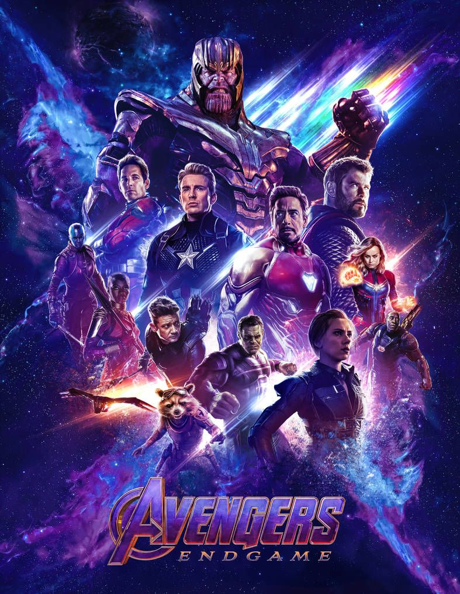

Web List Film Favorit
-

Shazam
Shazam! adalah film pahlawan super Amerika tahun 2019 berdasarkan karakter DC Comics dengan nama yang sama. Diproduksi oleh New Line Cinema dan didistribusikan oleh Warner Bros. Pictures, ini adalah angsuran ketujuh di DC Extended Universe (DCEU). Disutradarai oleh David F. Sandberg dari sebuah skenario oleh Henry Gayden, dan sebuah cerita oleh Gayden dan Darren Lemke, film ini dibintangi oleh Asher Angel sebagai Billy Batson, seorang bocah remaja yang dapat berubah menjadi superhero dewasa, yang diperankan oleh Zachary Levi. Mark Strong, Jack Dylan Grazer, dan Djimon Hounsou juga membintangi film ini.
-

Avengers: End Game
Avengers: Endgame adalah film pahlawan super Amerika tahun 2019 yang berdasarkan kisah tim pahlawan super Avengers dari Marvel Comics. Film yang diproduksi oleh Marvel Studios dan didistribusikan oleh Walt Disney Studios Motion Pictures ini adalah sekuel langsung Avengers: Infinity War (2018) dan merupakan film ke-22 Marvel Cinematic Universe (MCU). Film ini disutradarai oleh Anthony dan Joe Russo dan ditulis oleh Christopher Markus dan Stephen McFeely, dan menampilkan pemeran ensambel di antaranya Robert Downey Jr., Chris Evans, Mark Ruffalo, Chris Hemsworth, Scarlett Johansson, Jeremy Renner, Don Cheadle, Paul Rudd, Brie Larson, Karen Gillan, Danai Gurira, Benedict Wong, Jon Favreau, Bradley Cooper, Gwyneth Paltrow, dan Josh Brolin. Pada film ini, anggota Avengers yang masih hidup dan para sekutunya berusaha untuk membalikkan kerusakan yang disebabkan oleh Thanos dalam Infinity War.
-
500 Days Of Summer
500 Days of Summer adalah film drama komedi romantis Amerika Serikat tahun 2009 yang disutradarai oleh Marc Webb dan diproduseri oleh Mason Novick, Jessica Tuchinsky, Mark Waters dan Steven J. Wolfe. Naskah film ini ditulis oleh Scott Neustadter dan Michael H. Weber. Film ini dibintangi oleh Joseph Gordon-Levitt dan Zooey Deschanel.